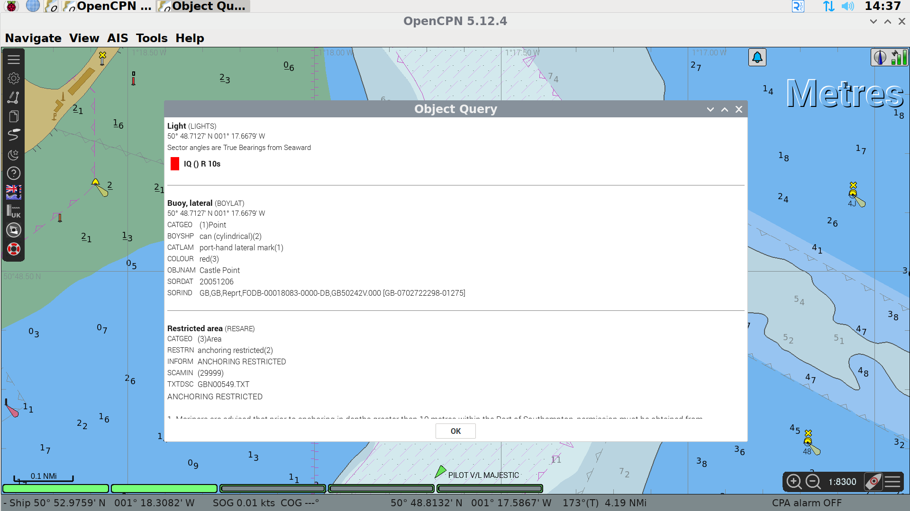
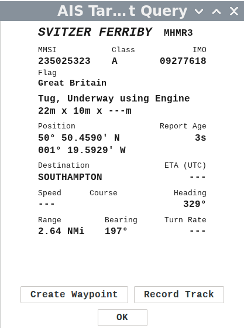
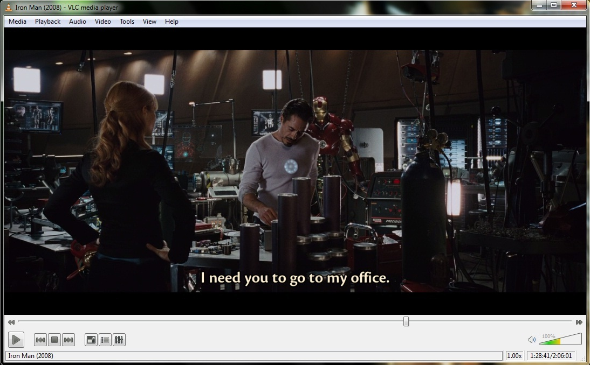

Ariel of Hamble Navigation
Version 0.5
Version 0.5
Please note - IP addresses and passwords are not present in this document as it is available on the public Internet.
Photo of Pi
Navigate to waypoint
Tidal Data
Importing from Navionics Boating App
Fault Reporting
Troubleshooting
Measured Data
Data that can be directly measured from the boat’s systems. For example, Apparent Wind Speed, Location
Derived Data
Data that needs to be derived from multiple data sources. Examples include True Wind Speed (from Apparent Wind Speed, Speed and Heading), Sunset Time (from Location, Date and a Database).
GNSS
Global Navigation Satellite System, examples include GPS and Galileo.
Speed
How fast you’re moving in any direction.
Velocity
How fast you’re moving in relation to a specific direction. Travel relative to North at a Speed of 5kts, then you’re velocity is 5kts. Travel South - your speed is still 5kts but your velocity is -5kts. Travel due East, your velocity is 0kts, even though your speed is 5kts.
Open Standard
A specification that is published by a standards developing organisation and is available under fair, reasonable and non-discriminatory (FRAND) terms - this does not mean free. This allows a number of organisations to make equipment that can interact with each other. Examples include NMEA 0183, Ethernet
Proprietary
A data format designed and used by one company for their products, not usually available under FRAND terms. Any interaction with such a format usually requires a degree of reverse engineering. Examples include SeaTalk, Micronet
Open Source
Usually used for software to mean that it is available under a licence such as the GNU General Public Licence, which allow you to use, build upon, distribute, sell etc. provided you allow others to do the same. Examples include the OpenCPN Plotter and SignalK data format and software.
This is an overview of the software and hardware used for Ariel of Hamble’s Navigation. The term navigation network is used to describe the network that is used to pass data between nodes around the boat, but in reality it is a number of networks. Further data will be provided in a deep-dive section at a future date.
NOTE: Please be aware that some information is measured and some is derived from those measurements. For example, Apparent Wind Speed (AWS) is measured and True Wind Speed (TWS) is calculated from AWS and Speed Through the Water (STW). A problem with a measured value will cause knock-on issues with values derived from it.
The TackTick instruments are used to generate depth, speed through the water, water temperature, apparent wind speed and apparent wind direction. The TackTick units use a proprietary radio network called Raymarine Micronet to pass information between the units installed in the navigation cupboard, the wind sensor and the display units.

Ariel has 3 display units:
1 wind display which can show either apparent wind direction and speed or true wind direction and speed.
2 double number displays which can be configured to show information such as depth, speed through the water, COG and SOG, time, location.
NOTE - please be very careful with the TackTick display units. They are extraordinarily expensive to replace - over £2000 per set.

The depth sounder uses ultrasonic waves to measure the depth beneath the transducer. The offset between the transducer and the bottom of the keel is applied in the Raspberry Pi. The depth sounder also provides the sea water temperature to the network. It connects to the unit in the navigation cupboard using a proprietary wired direct connection.

The speed transducer uses a paddle wheel to measure the speed of the boat throught the water. It connects to the unit in the navigation cupboard using a proprietary wired direct connection.

The Wind Speed and Direction unit at the top of the mast is solar powered. It transmits the information to the unit in the Navigation locker using a proprietary format called MicroNet.
A small PCB in the navigaation cupboard provides Temperature, Pressure and Humidity data to the Rapsberry Pi via a short IIC connection.

The EmTrak AIS is a multipurpose device. It is the vessel’s source of location data, it is an AIS class B+ transceiver, sending the boat’s location to other vessels and, when in range, shore stations, it receives the locations of other vessels and it has an inbuilt switch connecting both the internal AIS and the VHF to the mast-head antenna.
To prevent the VHF being powered on and transmitting in to a switched off AIS unit, both the EmTrak and VHF are on the same power switch “VHF”.
The EmTrak AIS uses the GPS antenna on the stern railing.
The EmTrak sends the following GNSS information to the Navigation system:
Location
COG and SOG
Rate of Turn
Time
Number of Satellites
Precision
NOTE: The EmTrak unit uses the US GPS, EU Galileo, Russian Glonass and Chinese Beidou GNSS satellites.
The EmTrak also sends:
Class A Vessel Location
Class B Vessel Location
Class A Vessel Type, Cargo, Destinations etc.
Search and Rescue Aircraft
Aids to Navigation (“Virtual Buoys”)
Safety Messages (MOB devices, SARTs etc.)

The Standard Horizon VHF uses the GPS signal from the EmTrack AIS unit. The location and time are shown on the front panel LCD of the VHF unit - these are required to make the DSC emergency calling system work.
(The VHF has an in-built VHF too, this is switched off as having multiple GPS locations being added to the network was one of the causes of issues seen in the first season)
The Standard Horizon also sends the location of emergency alerts received to the network so they can be viewed on the OpenCPN chart plotting software.
Insert Image
The RaspberryPi is the heart of the Navigation System. It is a small, but fully functional, computer system that runs a free specialist operating system called OpenPlotter. Originally designed for school students to be able to own a small, cheap computer - they’re now used in many industrial settings.
In adition to the main computer board, we have added two other specialist boards to the system (known as HATs).
MacArthur HAT - a specialist board produced by the company that creates OpenPlotter - it has inputs and outputs for NMEA 0183, NMEA 2000, NMEA OneNet, SeaTalk etc. plus the ability to interface to industrial sensors. The HAT also allows a safe shutdown of the computer board and has 2 sensors - environmental conditions in the cabin and a 9 degrees of freedom orientation sensor.
SSD Hard Disk board - to allow us to run the software from a proper hard disk, not an SD card.
OpenPlotter is a Linux-based operating system designed to use a cheap RaspberryPi computer and convert it in to a fully functional plotter system. It uses almost exclusively free, open source, community projects - which means it’s fully tested by a large community, there’s a number of projects around the world which maintain it and increase functionality and there’s a method to request changes.
OpenPlotter provides an interface to all of the standard data formats used by yacht hardware and a number of those used for industrial sensors.
The measured and computed data is collated in a central database by a software package called SignalK, which then makes the values available to other software packages (such as the chart plotter) and over the network for crew to use on their tablets.
OpenPlotter also provides a software chartplotter, weather prediction software, interfaces for autohelms, internet browsing, video viewing and an interface for a range of radio communications (at present we haven’t implemented the radio communications module on Ariel)
Further details on OpenPlotter can be found at the OpenPlotter Website.
SignalK is software designed to import data from a variety of sources around the boat and store it in a central database which can be accessed by other software. On Ariel, the SignalK servier takes data from a range of inputs such as the NMEA 0143 bus used by the TackTicks and EmTrak, from the barometer and thermometer in the navigation locker and software modules running on the Raspberry Pi and imports them in to the database. SignalK also stores a range of static data in this database which can be used in calculations, e.g. vessel draught.
SignalK stores data addresses and values, for example:
/vessels/<mmsi>/environment/windSpeedTrue 4.23
/vessels/<mmsi>/navigation/position 51.23453,-0.12248,2.34
This database is available to other software to read from - the plotter software, OpenCPN, receives all of its locations details, AIS vessels to overlay, DSC alerts directly from the SignalK database. SignalK also has a number of output plugins so the data is converted back to NMEA 0143 so derived values can be displayed on the TackTicks, to a data stream that can be used by Navionics or similar on member’s phones and tablets and in some cases to files so that trends can be observed (e.g. we’re actively monitoring battery state to see if we can understand better what is causing mysterious battery drainage).
Further details on SignalK can be found at SignalK Website.

OpenCPN is a fully functional chartplotter which can:
Display a wide range of chart formats including those made available for Europe via O-charts
Be used for all electronic chartplotter tasks such as adding routes, waypoints etc
Can display the location of emergency alarm signals such as MOB alarms, DSC safety messages etc.
Can display AIS targets including closest point of approach lines.
Can overlay GRIB weather prediction files
Can display tidal heights and currents, magnetic offsets etc.
Can display Radar overlays.
Can be extended by plugins to do tasks such as Vessel Data Recording.
Further details on OpenCPN can be found at OpenCPN Website
NOTE: OpenCPN is freely available on Windows, Mac, Linux and Android - please download and familiarise yourself - the charts for the entirety of the UK are also available for about £20.

O-charts use the latest information from a number of European hydrographic offices to create chart packages specifically designed for OpenCPN. Each purchase is licensed to a USB key that is plugged in to the Raspberry Pi.
The visual design of the charts is fully cusomisable - we have made it look like an Admiralty chart on Ariel - please note that you may need to zoom in on the chart to see all of the information present.
NOTE: without the USB key, the charts will not be displayed.
Each year we purchase the entire UK chart set plus any required for the summer cruise, e.g. Atlantic France. If you are planning on sailing anywhere that could require new charts, please contact the Commodore. Charts can be installed remotely. Charts receive updates every four weeks - again updates can be run remotely.
MOB alarms work in a number of different ways. If members wish to use a DSC based MOB alarm the wearer must register the vessel MMSI number with the device. This is usually done via an smart phone app.
The location of MOB and Safery alerts are shown on the chart surrounded by a flashing ragged ‘circle’ and an alarm is sounded.

OpenPlotter provides a web-based Dashboard for displaying information stored within the SignalK database. This uses software called KIP. This is accessed using a web browser.
The dashboard has a number of pages:
Sailing data overview - windrose, wind speed, speed, heading, COG, SOG etc.
Location data - location, local time, sunrise and sunset times at this location
Boat data - engine hours, battery status etc.

Our custom software uses a number of tools that are built in to the Raspberry Pi’s operating system. The majority use a service called cron which runs a specific programme at a specific time.
The engine hours meter works by sampling the voltage output from the alternator. If a voltage is present, the alternator and engine are running. The total hours value is stored in a text file. Every 3 mins the software checks for the presence of voltage and if present, increments the time stored in the file and sends to new value to the SignalK database.
The offsite notifier uses a service called (ntfy.sh) - sending short notifications from the Raspberry Pi which can be read by the Boatswain’s team and committee. To ensure that Skippers and Mates are aware that a notification is running, a short jingle is played. For information on the NTFY channel that you need to subscribe to, please contact the commodore.
The location notification checks if the boat is approaching a fixed location and sends a ntfy.sh notification. This is mainly used on the approach to Elephant Boatyard to know when the boatswain’s team can visit the yard to do work.
The sunset notification lets us know that the navigation system is running at sunset, so we know that a night sail is taking place.
The offsite notifier to send a set of data when the navigation system is shutdown. This would be used for information important to planning maintenance and spotting early indications of issues. In the initial rollout we’re hoping to send engine hours, battery status and cabin humidity with a hope to add further information such as fridge minimum temperature, engine maximum temperature, bilge water level etc.
At present the dashboard is only available on the Raspberry Pi at the chart table via a web browser which competes for screen real-estate with the chartplotter. The boatswain’s team has ideas for two projects in the run up to the new season:
Make the KIP dashboard viewable on the local Ariel of Hamble network so that the dashboard can be viewed on a tablet or phone in the cockpit.
Make a small, basic repeater that can be installed near the Raspberry Pi monitor showing only the most important data.
There is an open source project based on OpenPlotter to interface to a Volvo Penta engine and send data such as RPM, temperature, etc. to the navigation network.
There have been some reports of batteries misbehaving, so we’re planning on adding battery monitors to both the Engine and House battery banks that will allow us to measure the battery voltage, provide this to the navigation network and graphically interpret the data so we can see if what correlation there is between voltage drop and equipment usage onboard.
To quote the Commodore’s near namesake, William Thomson, Baron Kelvin: “When you can measure what you are speaking about, and express it in numbers, you know something about it; but when you cannot measure it, when you cannot express it in numbers, your knowledge is of a meagre and unsatisfactory kind.”
OpenCPN is an open source chartplotter maintained and improved by a large community of world-wide users. It is freely available to download and we encourage club members to download and run it locally to allow them to practice how it is used and to allow them to plan routes, waypoints etc. in advance.
This is a graphic of the main interface:

The large text “Metres” identifies the units used in the soundings depths shown on the chart.
In the top right corner, there is a satellite signal strength indicator showing the reliability of the position data, and an icon which informs if the plotter is in North up or Course up mode.
In the bottom right corner are the zoom controls of the chart, a button to pan the chart so Ariel is at the centre (boat with green dot) and a button to bring up the chart display options.
At the bottom left of the display, there are a number of green bars - these represent the charts that cover the area displayed. The chart plotter blends data from a number of charts to best show required data. This is known as “Chart-Quilting”. The charts used will change as you zoom in and out and as you pan or change the chart settings. In this example 3 of the 6 charts are being used in the display. Please leave chart-quilting enabled - we have set the chart detail level to what we believe is a very useful compromise - readable on a 14” screen, showing all hazards and most depth soundings.
In the top left corner is the menu bar. The top icon expands and contracts the menu.
The second icon opens the Options menu. Please do not change anything in the options menu.
The third icon allows you to create a route.
The fourth icon opens the routes, tracks and waypoints manager, allowing you to name routes, add organise waypoints, import routes and waypoints from file etc.
The fifth icon toggles track recording on and off.
The sixth icon toggles between daytime, dusk and nighttime colour schemes.
The seventh icon opens the help dialogue.
The eigth icon allows the user to download and view UK tidal data.
The ninth icon opens an AIS Radar so you can see AIS targets without the distraction of the chart items.
The final icon will drop a MOB waypoint.
The chart display options can be accessed by clicking on the three horizontal bars on the menu bar on the bottom right of the screen, near the zoom buttons and the centre on boat button.

There are two different ways to pan the chart that is being displayed. The first, move the mouse pointer to edge of chart, the mouse pointer will turn in to green triangle. Once the green triangle is shown, click the left mouse button and the chart will move. Secondly, the chart can be dragged using the mouse. Click and hold the left mouse button and then move the mouse, the chart will move with the mouse.
To zoom the chart in or out, there are two alternatives too. The user can use the mouse wheel to zoom in or out, or they can use the icons + or - on the control panel at the bottom right of the screen.
One of the key items that more modern chart plotters offer is a large quantity of data about items on the screen. You can get flash patterns, descriptions of the structure of a light, warnings etc.
To view the information, right click the mouse on the specific item.

From the pop up menu, select Object Query.

Distance and direction can be measured between any two points on the chart. To start a measurement, right click with the mouse and select measure (or press letter M on keyboard).
Left click with the mouse at first point, then move the mouse to the second point and read off the distance and direction. The screen will auto-pan if you’re move the mouse to the edge of the chart whilst measuring.

There are two methods to add waypoints in OpenCPN. To navigate to a waypoint CHECK
The first method uses a standard file format called GPX which can store waypoints, routes or tracks. These can be exported from most GPS related software so you can plan at home and import to OpenCPN.
Open the Mark Manager from the control panel on the left hand side of the plotter screen. Click on the Marks tab, and at the bottom of the manager box click Import GPX. Alternatively, marks can be imported as a layer, which can be turned on and off en masse. Currently, we have layers for the Solent Racing Marks and Dartmouth regatta marks.


When adding marks via the chart, right click the mouse at the point where you want to add a waypoint and click Drop Mark.
To name the waypoint or to change the icon, go to mark manager, navigate to the marks tab and click on the relevant waypoint. Click Properties on the right hand of the panel and change the name, location or icon. Remember to press Save.
Any waypoints which are not named will be deleted on a monthly basis.
Similar to waypoints, routes can be imported from a GPX file that has been created in advance.
To create a route, start by right clicking the mouse on the chart and select New route.

Click at each point on the route. To finish making the route CHECK


To start using the route, either right click the mouse on the route and click Activate, or open route manager, navigate to the routes tab and click activate. The route can also be named by clicking on Properties in the route manager.
Any routes which are not named will be deleted on a monthly basis.
Chart up mode can be enabled by clicking on the Arrow next to the satellite signal level indicator on the control bar at the top right of the display or via the chart control pop-up that is accessed by clicking the three horizontal bars at the bottom left of the display.
This does slow the chart rendering and is not recommended.

AIS targets can be switched on and off using chart inoformation control pop-up that is accessed by clicking the three horizontal bars at the bottom left of the display. Please ensure that this is left on for the next skipper and crew.
To view more details about an AIS target, such as size, speed, destination, you can right click the mouse on the vessel icon and then click AIS Target Query.

NB there are two classes of AIS user, class A and class B. Class B are smaller craft, like Ariel, and do not transmit the same level of detail as a class A user.
Tidal Data
The AIS can be displayed on a RADAR-like overlay. This is available from the main control panel on the left hand side of the display.

This should only be done with permission of the commodore or boatswain This action can be undertaken remotely by them, which is preferable.
To update charts in the Open CPN plotter, click on the settings icon (a cog) in the left hand side dropdown. This will open the following menu system.
Within the Options box, clci the charts icon in the top row, then on the second row of options that appears, click “o-charts”.
This will open up the “o-charts” options. Click “Refresh Charts List” and wait for the plotter to check the Internet server for any updates.

Click on the first chart set (in this image “British Isles 2025”). If there is a chart update available, under the available actions you will be able to click “Update Selected Chart for sgl001F361B (USB Key Dongle)”
The software will then update a chart pack update from the internet. This will take some time.

When the download finishes, you will be asked if you want to use the normal storage locaation for chart files. Click “Continue”
Repeat steps 3 - 5 for the other chart packs installed in the system (in the image we also have “France Atlantic 2025”)

Once all chart packs have had their downloads stored on the plotter, click on the “Chart Files” option on the second row of options, then click “Prepare all ENC Charts”
Finally, Click “Apply” at the bottom of the Options dialogue box, wait for the charts to be applied and then click “Ok”.
The KIP dashboard runs on a web browser. The browser should open automatically, if it doesn’t, the blue globe logo on the top bar next to the Raspberry Pi logo will start the software. Navigate to IP address.
The initial page is useful for sailing, showing wind, speed, course etc.

Further pages are available. To change between pages, use the keyboard clicking Ctrl and Up arrow or Ctrl and Down arrow to change page.


Further information will be added to the screens as it becomes available.
XyGrib is an open source software package designed to download and display weather forecast in a compressed format that doesn’t require much data.

To download data, use the mouse to click and drag a square over the area of interest and then click the download button on the icon bar (next to the Show Model Limits drop-down). You’ll then be able to choose the model of interest (the EU model EMCWF is good for European waters) and the items you’re interested in (Temperature, Wind speed, Precipitation etc.)
Once the file has downloaded, it will open. You can use the left and right arrows on the icon bar to step forwards and backwards in time. The Timeline is shown at the bottom of the screen.
To change what the forecast pane is showing, use the Weather Map drop-down at the top of the page. It will show which forecast elements are available in the downloaded file.
VideoLAN VLC is a video viewer. It can play just about any video file. If you open the VLC viewer and click Media and then open, you’ll get a file open dialogue and can choose a video to play.

The screenshot tool allows you to easily take a screenshot of the plotter, with a delay so you can get the mouse in to position. This is incredibly useful if you’re asking for help from the boatswain’s team. (Unfortunately, I can’t take a screenshot of the screenshot app)
Please send fault reports with the system to the Commodore and the Boatswain.
In the fault report please include:
A description of the error including, if possible, what data values are faulty.
For example, Depth is showing “—” on the TackTick display, but is present on the plotter display. Reports such as speed is wrong, without
a description of what is happening are difficult to remotely diagnose.
Screenshots, photos, videos etc. are always helpful!
The date and time that the error occurred.
The Commodore and Boatswain have remote access to the system, so they may ask you to leave it switched on when you’re doing something else.
test
version |
description |
date |
|---|---|---|
0.6 |
Advanced usage Added description of advanced use of the system and |
22/02/26 |
0.5 |
Basic usage Added description of basic use of the system |
22/02/26 |
0.4 |
Booting and Shutting Down Added data on how to safely boot and shutdown the system |
22/01/26 |
0.3 |
Technical Overview Added an overview of the navigation hardware, sensors and software used on Ariel of Hamble |
22/01/26 |
0.2 |
Automated PDF creation Set up creation of PDF using Sphinx SimplePDF |
21/01/26 |
0.1 |
Automated webpage creation Set up publishing to GitHub pages using Sphinx to convert from Markdown to HTML |
21/01/26 |
Chart |
description |
date |
|---|